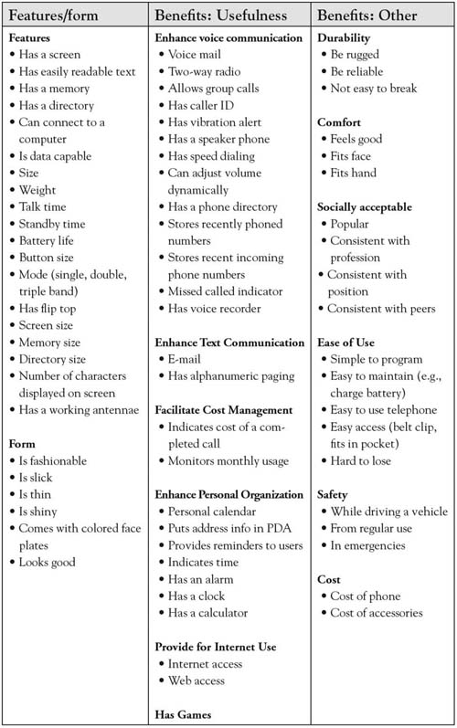
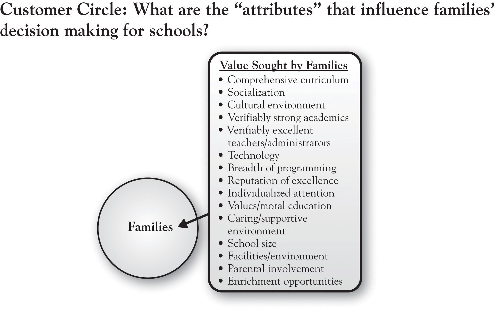
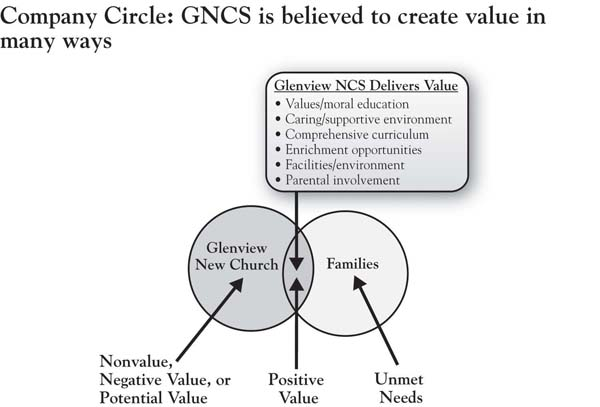
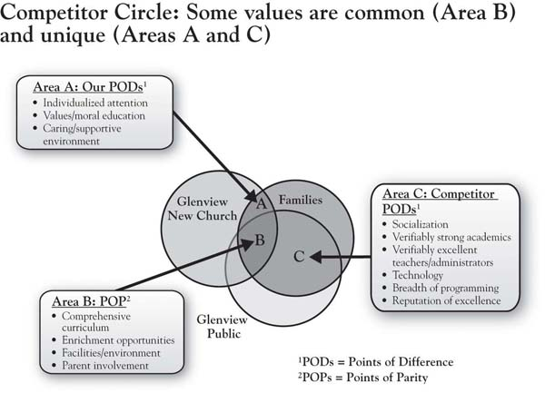
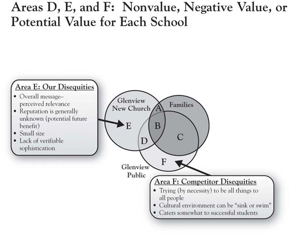
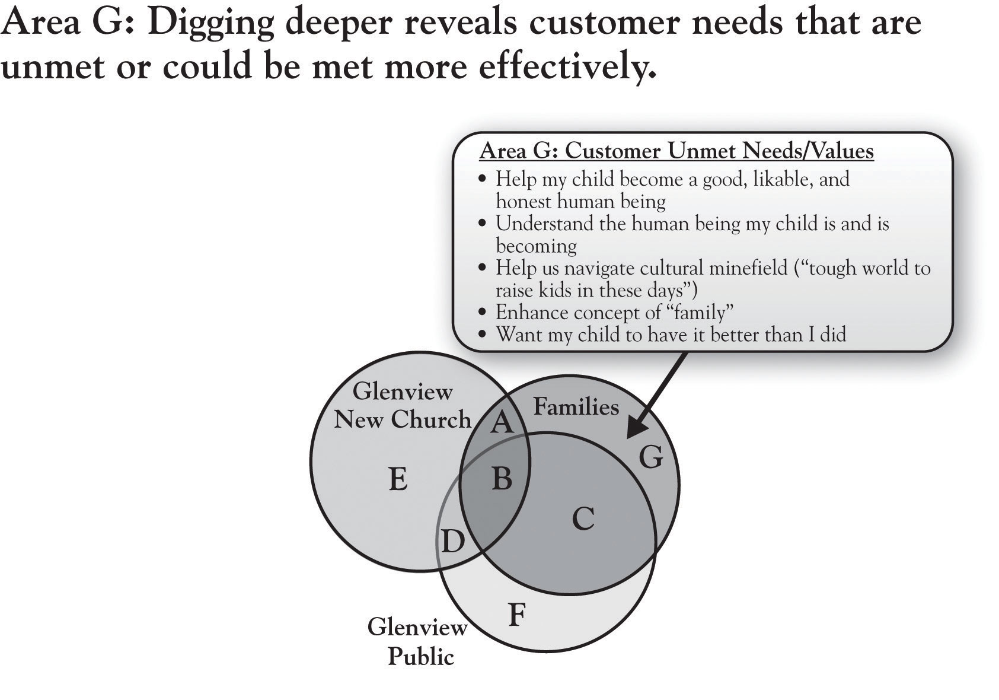

The 3-Circle model provides a method of explicitly identifying the current state of customer value in a market and a variety of sources for improving a firm’s competitive position and profit potential. In introducing the 3-Circle model here, in Chapter 2 "Introduction to 3-Circle Analysis", we will first take you through what we refer to as the “outside” view. This represents the customer’s view of the world. Yet it is important to briefly distinguish this outside view and what we later refer to as the inside view.
The outside viewThe customer’s perception of a company’s value and competitors’ values. is what customers believe about us. The outside view is the front office or maybe even the front window. It captures the impressions our customers, and potential customers, have about us based on what they observe: seeing and using our products and services, our pricing, distributor relationships, exposure to our marketing communications and to word-of-mouth from others familiar with us, and so on. The outside view is the customer’s perception of our value and competitors’ value. It is the rock musician’s beliefs about the Ultimate Ears monitors and the benefits he or she derives from them.
In contrast, the inside viewThe assets, resources, capabilities, and knowledge that the company brings to bear in producing value for its customers. is the back office. It is what we really are on the inside—the assets, resources, capabilities, and knowledge that we bring to bear in producing value for customers. The inside view is what we really are and can do. For Ultimate Ears, this reflects the true capability the company has for research and development, product design, manufacturing, sales, and customer relationship management in serving the market.
The distinction between outside and inside is very important. We will learn that there are many, many times that customers’ view of a company does not match the actual value that the company is creating or can create. Further, as George Day of the Wharton School first suggested, true competitive advantage occurs only when the distinctive value produced for customers is produced by real capabilities and assets that competitors cannot match.Day (1994, October).
We will formalize this discussion in Chapter 4 "The Meaning of Value", but our first premise is that customers purchase and consume value in the form of product attributes. Derived from the Latin root attributus (which means “to bestow”), the word attributeAn inherent characteristic or quality of some object. means an inherent characteristic or a quality of some object. In the same way that people can be described as a bundle of characteristics (height, weight, gender, ethnicity, age), goods and services can be described based on size, cost, quality, reliability, and reputation.
In fact, it is surprising how precisely we can characterize the attributes or features of products and services. We started with a relatively simple description of chicken—with dimensions of meatiness, color, presence of pin feathers, and price. More complex product categories (e.g., dishwashers) might have over 100 attributes when functional qualities, design qualities, pre- and post-purchase services, and perception of transactional factors are taken into account. Figure 2.2 "Customer Values for Cellular Telephones" (Column 1) provides a partial list of the attributes of cell phones to illustrate how value can be broken down into component parts.
Figure 2.2 Customer Values for Cellular Telephones
Note. Adapted from “Stimulating creative design alternatives using customer values,” by R. L. Keeney, 2004, IEEE Transactions on Systems, Man, and Cybernetics-Part C: Applications and Reviews, 34, 50–459.
The first fundamental insight of the 3-Circle model is that we can learn a lot about firms’ positions in a market by sorting the attributes in a way that clarifies customer beliefs about which competitors get credit for which attributes and benefits. The framework provides a strategically meaningful way to categorize current attributes and anticipate the creation of future value. An organization gets insight into its current and future competitive position by examining how value can be broken down into attributes, determining how important those attributes are, and identifying what attributes customers associate most strongly with each competitor.
What follows is an illustration of the output of a 3-Circle analysis. For the illustration, we use the case of a small church-based primary school. Although one might believe education to be a commoditized market, in fact, the analysis reveals some interesting, very natural differences in competitive positions. It is also important to note that the analysis here is based on the same exercise in examining growth strategy as one would undertake in any competitive market. While the focus again is on output here, subsequent chapters will provide detail on process.
Glenview New Church is a religious organization in Glenview, Illinois, headed by Pastor Peter Buss. The church has a small primary school for kindergarten through 8th grade. With the school still early in its development, Pastor Buss undertook a 3-Circle analysis in the interest of building growth strategy. Pastor Buss focused on parishioners, parents of younger school-aged children as the market segmentAn identifiable group that shares one or more characteristic. to study, and the Glenview Public Schools as the competitive target. The goal of a 3-Circle analysis is to build a growth strategy for Glenview New Church School (GNCS) via a deep study of the customer’s view of competitive positions (outside view) and an internal analysis of the school’s current capabilities and assets (inside view). We begin with the outside view.
Having identified the target customer segment for the analysis as young parishioner families with school-aged children, we can depict the customer circle as reflecting the value they seek. What are the attributes of schools that affect family choices? There are several that are straightforward:
These are some of the basic criteria families will use to evaluate the schools they are considering.
A more complete listing of attributes that emerged from the analysis is given in Figure 2.3 "Glenview New Church School: Customer Circle". These attributes and considerations are determined by conversations with the target segment. These concerns are familiar, relating to curriculum, quality of teaching, school culture, facilities, and so on. The list is generated from thoughtfully listening to people describe how and why they chose their school or are considering their choice of schools. Of course, not all of these factors are considered by all families. Some factors are more important than others. In fact, we can usually group customers together in terms of the factors that are most important in their decision making. These groups are called market segments, and such groups will be considered in more depth in Chapter 3 "Defining the Context". For the moment, we will summarize the area of the customer circle as capturing the value a particular customer segment is seeking—in other words, what the customers want.
Figure 2.3 Glenview New Church School: Customer Circle
In Figure 2.4 "Glenview New Church School: Adding the Company Circle", we add a circle that represents the customer’s perception of how well our company (in this case, Glenview New Church School) is delivering on the value that the customer is seeking. At this point, it is very important to distinguish the fact that the circle represents customer perceptionWhat the customer thinks about a company, not what it actually offers.—it does not represent what we actually offer or what we think we offer. This distinction is critical in emphasizing that the outside view focuses on what customers believe rather than what we (the firm) believe the reality to be.
As we know from Chapter 1 "The Challenges of Growth", bringing these two circles together produces the simple distinction between positive value (the overlapping area), nonvalue or negative value, and unmet needs.
Pastor Buss discovered that families recognized the school for its comprehensive curriculum, for a caring and supportive environment, and for a value- and morals-based education. In addition, they felt that the school facility met their needs, including availability of after-school enrichment programs and parental involvement. We will expand upon the other two areas (nonvalue or negative value and unmet needs) as we build the analysis out. Suffice to say that there are a number of positives that Pastor Buss heard from families. Yet the surprise in this analysis occurs when we subsequently learn that our competitor not only has many of the same positives, they also have some positives that we don’t have! So the next step is to add a circle that represents customer perception of the competitor, in this case, Glenview Public Schools.
Figure 2.4 Glenview New Church School: Adding the Company Circle
Among other competitors for GNCS, Glenview Public School District 34 (GPSD) is formidable. Glenview has a total enrollment of over 4,300 students across 3 primary, 3 intermediate, and 2 middle schools. Four of the schools have been selected as National Blue Ribbon schools. There are 370 teachers, with an average of 8 years teaching experience, three-quarters of whom have a master’s degree. What are the beliefs of parents regarding the value provided by the Glenview public school system?
Figure 2.5 "Glenview New Church School: Adding the Competitor Circle" introduces the competitor circle, illustrating some very important distinctions. First, one striking point is that of all the dimensions of positive value for GNCS depicted in Figure 2.3 "Glenview New Church School: Customer Circle", only about half are unique to Pastor Buss’s school relative to the competitor (individualized attention, values- and moral-based education, and caring and supportive environment, which define GNCS’s Area A, or points of difference). The attributes on which GNCS is believed to be about the same as GPSD are comprehensive curriculum, facilities, enrichment (after-school programs), and parental involvement. This latter set of attributes is labeled Points of Parity (Area B), as the competitors are “at parity”—that is, neither is believed to have a unique advantage. In other frameworks, these dimensions are given other labels (e.g., table stakes; expected product) but have the same basic meaning. These are the factors that customers fundamentally expect all schools to deliver on in order to be in the consideration set.
What was striking to Pastor Buss, however, was to identify the points of difference for GPSD, the competitor (Area C). GPSD got a great deal of credit for the breadth of its curriculum, its technology, its greater opportunity for socialization among a diverse population, and its reputation. But one dimension that surprised Pastor Buss and his team was the heavy weight that parents placed on the notion of “verifiability” in both academic performance and teacher credentials. This weight is consistent with the attention that standardized testing has received since the passage of the No Child Left Behind Act of 2001 (NCLBA), requiring performance standards for adequate yearly progress for public schools. Illinois private schools such as GNCS are not subject to the same performance standards and are therefore not required to administer standardized tests. Pastor Buss discovered that standardized test scores as evidence of academic performance were a major positive point of difference for Glenview Public—and therefore a disequity for GNCS.
Figure 2.5 Glenview New Church School: Adding the Competitor Circle
Figure 2.6 "Glenview New Church School: Areas of Nonvalue, Negative Value (Disequities), or Potential Value" focuses on the areas of the model that, for both firms, fall outside the customer’s circle. By definition, these areas reflect the firms’ attributes and benefits that are unimportant to customers or do not meet customer needs. Areas D, E, and F capture value that is being produced by the competitive firms that fits into one of two categories:
Figure 2.6 Glenview New Church School: Areas of Nonvalue, Negative Value (Disequities), or Potential Value
In the case of Glenview New Church School, the public school’s strength in verifiable academic performance is actually a unique disequity, which would define it as falling into Area E. Simply, parents have a more difficult time choosing a school in a post-NCLBA world if the evidence of performance is not offered up. The notion of verifiability both in terms of school performance and staff credentials was something of a surprise to the GNCS management team. In his study, Pastor Buss’s analysis for GNCS did not reveal any items of common disequity (Area D) for the two schools.
In addition, Pastor Buss was surprised to hear that many parents were not clear on the church’s mission for the new school. There were two dimensions of this. First, the reputation of the school was generally unknown among some parents. Second, some of those who were aware of the school conveyed that the church’s communications about the school were not perceived as relevant—that is, they did not personally connect with the messages. The sum total of these two concerns is that the school’s identity was difficult to pin down, which can be a disequity in the customer’s eyes.
As we will see, these areas turn out to be very important, in part because there are strategic options for dealing with these concerns that have implications for growth. Attributes or benefits one finds in Area E, for example, might be (a) maintained, (b) eliminated to save cost, or, ironically, (c) actually built into potential satisfiers.
Innovation is a critical component of growth strategy for many organizations today. As such, it is critical to have a systematic way of motivating the search for new customer value ideas. The 3-Circle model gives meaning and language to the need for innovation.
Figure 2.7 "Glenview New Church School: Area G, Unmet Needs" focuses on Area G, which we label the “white space.”We thank Viva Bartkus for suggesting this term. This region of the framework actually has two different dimensions or meanings, both critically important. The white space generically captures value desired by the customer that is not currently being fulfilled by either the firm or its competitor. Those needs may be (a) currently known and top-of-mind or (b) less known (latent). Needs that are currently known and top-of-mind are often obvious in customer complaints; therefore, many clues about unmet needs might be found in the attributes that end up in areas D, E, and F. For example, the travel industry is complex and rife with consumer dissatisfaction due to late planes, mistaken communications, and confusing airline loyalty programs, among other factors.Higgins (2008, June 1); Haberkorn (2008, May 28). In short, there may be needs the customer has that are known and that have not yet been satisfied.
Figure 2.7 Glenview New Church School: Area G, Unmet Needs
Yet there are also underlying needs that may be less obvious. As we will discuss in Chapter 5 "Sorting Value" and Chapter 6 "Growth Strategy", there are approaches for exploring the white space that require deeper inquiry, and a variety of methods are available. To illustrate this distinction, notice the last two columns of Figure 2.2 "Customer Values for Cellular Telephones". While the first column deals explicitly with the features of the phone itself, the second and third columns focus on the outcomes of particular features of the phone. So, for example, while the packaging and sales discussion might focus on a number of features like screen readability, size, weight, and battery and memory size, ultimately, the customer wants to get a sense of how this phone will help them in voice and text communication, personal organization, durability, safety, and comfort. The latter reflects deeper needs, which might more powerfully guide product development by providing a clearer understanding of customer problems to be solved.
In his analysis of GNCS parents’ decision making regarding schools, Pastor Buss utilized a research approach called “ladderingDrills down into deeper reasons underlying customers’ interest in the attributes of a product or service.,” which effectively drills down into deeper reasons underlying customers’ interest in the attributes of a product or service. So why are attributes like individualized attention, comprehensive curriculum, and values-based curriculum important to families as they choose among schools? Figure 2.7 "Glenview New Church School: Area G, Unmet Needs" reveals several interesting values that Pastor Buss identified in his in-depth conversations with customers. These values relate to the deeper goals that parents have for their children—becoming a likable, honest person; navigating a cultural minefield; wanting their child to have it better than they did. These are not attributes of the school but are ultimately outcomes of the school’s attributes. They are unmet in the sense that they probably can never be completely resolved. At the same time, the school’s efforts to speak to these values in program development, hiring, and communications will have a very big impact on the value that parents find in the school.
Note that these deeper values are hardwired in us. No firm “creates” needs—they are built into us and drive our daily behaviors. However, most of us as consumers (and as managers) do not really think about these deeper drivers on a regular basis. But recognizing their existence—by keeping a focus on Area G in growth strategy planning—can offer dramatic insight into customer value and impact on growth strategy. An example is a case involving the Rust-Oleum management team. Rust-Oleum is a well-known manufacturer of high quality paints, with its brand anchored around its historically highly effective rust-preventative paints. Facing pressure from retail store category managers to lower prices, company management found deeper concerns about category profitability (and, likely, personal achievement) in the retail category managers’ protests. Instead of cutting prices, the Rust-Oleum team sought to more deeply understand the problem that category managers were attempting to solve. They concluded that the retailers’ real issue was not a need to extract more margin from individual vendors but, instead, a need to improve the overall profitability of their small project paint category. In response, Rust-Oleum created a data-driven approach to category management for small project paints, helping retailers significantly improve sales and profit from the paint category and producing double-digit growth in sales of its own brand.
The lesson is that in any product or service category, needs are never completely fulfilled. Area G is a critically important source of potential value to be added in a market that can fuel growth. It is important to note that Pastor Buss’s analysis of GNCS was undertaken on his own, with guidance from the 10-step 3-Circle growth strategy process that is summarized in Chapter 9 "Summary: Growth Strategy in 10 Steps" of this book. We will discuss the implications of this analysis for the school’s growth strategy, but we will first consider the concept of the inside view.